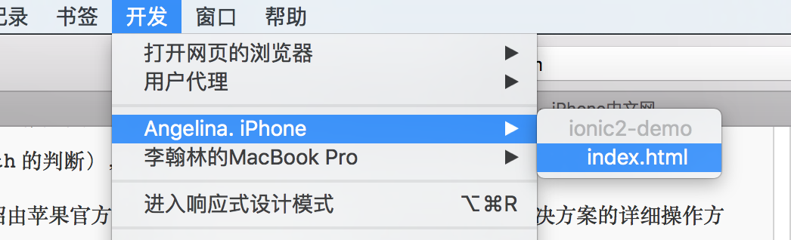

Ionic2中文教程（三）浏览器、ios调试
考虑到大家在开发过程中都希望随时查看自己的代码问题和整体的效果，所以在讲解如何开发app之前，我还想给大家介绍一下ionic项目是如何测试调试的。本文包含Ionic项目如何用浏览器调试，搭建ios环境和调试方法。android调试将在下一篇讲解。
说明：Windows和linux是无法搭建ios环境的，只有mac能搭建ios环境，并且mac搭建android环境也很容易，所以推荐大家用mac开发。
浏览器调试
在工程目录下运行命令ionic serve 可以让app运行在浏览器上，如果你修改代码，不需要重启服务，ionic会自动更新你的app在浏览器中显示，你只需要用浏览器访问ionic运行的端口即可，默认端口是8000并在浏览器中打开。1
ionic serve
然后打开调试工具，之后就可以进行调试了！
- chrome浏览器：选项 → 更多工具 → 开发者工具
- Safari：偏好设置 → 高级 → 在菜单栏中显示“开发”菜单； 开发 → 显示web检查器
当你的程序遇到问题并且不知道错误在哪里时，一种非常有效并且直观的调试方式是在程序中加入1
console.log(this.variable);
将相关的变量的值输出到控制台，当程序运行到这个语句时，会在浏览器调试的console控制台窗口中将变量的值打印出来，方便你查找错误。
app在浏览器上运行效果跟在在真机上运行的效果大部分是相同的，但是不完全相同，尤其是当你使用cordova插件时，大部分插件浏览器是不支持的，无法显示效果，这时你需要在ios或者android设备上调试。
ios调试
安装Xcode
在你的mac上安装Xcode，它是编译ios app必须的工具，在app store中下载安装即可
添加ios平台：
1 | ionic platform add ios |
安装ios编译部署依赖
1 | sudo npm -g install ios-sim ios-deploy |
如果出现下面类似的错误：1
2
3
4
5
6
7
8
9
10
11
12
13
14
15
16
17
18
19
20
21
22npm WARN lifecycle ios-deploy@1.8.6~preinstall: cannot run in wd %s %s (wd=%s) ios-
deploy@1.8.6 ./src/scripts/check_reqs.js && xcodebuild /usr/local/lib/node_modules/.staging/
ios-deploy-298c9491
npm ERR! Darwin 15.4.0
npm ERR! argv "/usr/local/bin/node" "/usr/local/bin/npm" "install" "-g" "ios-deploy"
npm ERR! node v5.10.1
npm ERR! npm v3.8.3
npm ERR! path /usr/local/lib/node_modules/ios-deploy/build/Release/ios-deploy
npm ERR! code ENOENT
npm ERR! errno -2
npm ERR! syscall chmod
npm ERR! enoent ENOENT: no such file or directory, chmod '/usr/local/lib/node_modules/ios-
deploy/build/Release/ios-deploy'
npm ERR! enoent ENOENT: no such file or directory, chmod '/usr/local/lib/node_modules/ios-
deploy/build/Release/ios-deploy'
npm ERR! enoent This is most likely not a problem with npm itself
npm ERR! enoent and is related to npm not being able to find a file.
npm ERR! enoent
npm ERR! Please include the following file with any support request:
npm ERR! /Users/lihanlin/npm-debug.log
用下面的命令即可：1
sudo npm install -g ios-deploy --unsafe-perm=true
运行模拟器或在真机上运行
1 | ionic run ios |
当你没有连接你的设备（比如你的测试iPhone）时，会启动ios模拟器，将你的app安装在模拟器中运行。当你连接你的设备时，ionic会尝试将app安装在你的设备中并运行。这时可能会出现一个类似的“缺少证书”错误：1
2
3Code Sign error: No matching provisioning profiles found: No provisioning profiles with
a valid signing identity (i.e. certificate and private key pair) matching the bundle
identifier “com.ionicframework.nian332108” were found.
创建ios真机调试证书
在真机上调试ios app需要苹果的证书。首先你需要注册ios开发账号（发布你的app必需的，每年688元），然后生成真机调试证书，不会的同学参见下面这个教程：创建ios真机调试证书。不过如果你想只调试app，不需要将你的app提交到app store发布的话，我之前看到有方法可以在xCode中直接生成真机调试证书，不需要花任何费用，这个方法我没有研究过，适合的朋友可以自己找资料学习一下。
注意：生成证书时的APP ID Suffix（上述教程第13步）选择Wildcard App ID，Bundle ID：“com.ionicframework.*”
生成证书后在Xcode中登录你的账号
Xcode → preferences → Account → 登录。
你可以在view details中查看自己的有效证书。
真机运行调试
解决证书问题后你就可以真机运行调试了，注意连接设备后手机不要处于锁屏状态1
ionic run ios
这时你的app会成功运行在你的设备上！
调试方法：
- iOS 终端：设置 → Safari → 高级 → Web 检查器 → 开。
- OS X：Safari → 偏好设置 → 高级 → 在菜单栏中显示“开发”菜单 → 开发 → iPhone → index.html

打开index.html后，调试界面就展现在你的眼前啦！
说明
ionic2中文教程是我对ionic2的学习经验总结，分享出来希望能借此让以后接触ionic2的小伙伴迅速高效的学习使用这个框架。如果此文章对你有帮助，请按下方分享按钮将网站地址分享给更多的小伙伴，未经本人同意不得转载。如果你有问题需要我的帮助或发现错误请根据博客最下方邮件链接与本人联系。